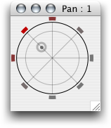

This window is opened by clicking on the circle icon in a channel's header panel. Alternatively, when you press and hold the mouse over this icon, the panorama window is opened as a popup panel next to the mouse.
The panel shows a disc representing the listening space with a small disc indicating azimuth and spread of the panorama. You can click and drag the disc to adjust the panorama. Moving it on the outmost circle results in minimum spread. Moving it to the second circle results in equal power spread which you will want in most cases. Moving the disc ot the center increases spread which means more adjectant speakers begin to play along with the most prominent one. The reddish colours of the speaker icons symbolize the amount of energy fed into them.
The number of speakers corresponds to the number of channels of the current output routing, where routing channels are distributed in clockwise order with the first routing channel placed depending on the start-angle setting of the routing. By default a "Out 1-2" routing is created which simply consists of two channels playing on the first two audio interface channels, where the first channel is placed at -90 degrees, the second at "Start Angle plus 360/N = -90 + 360/2 = +90" degrees.
To create new output routings, choose "I/O Setup" from the window menu. To switch between your routings, choose the routings name from the list shown at the bottom of the control room frame.
For technical details refer to the supercollider documentation of the PanAz UGen.